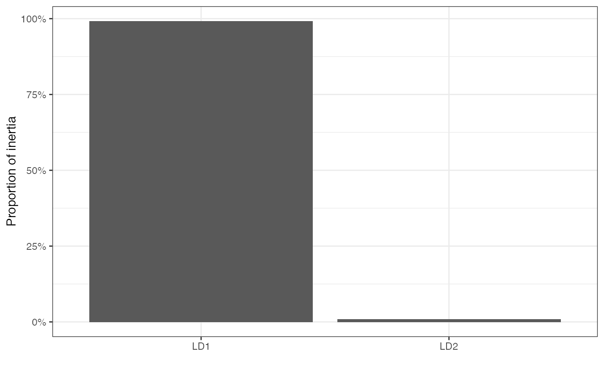
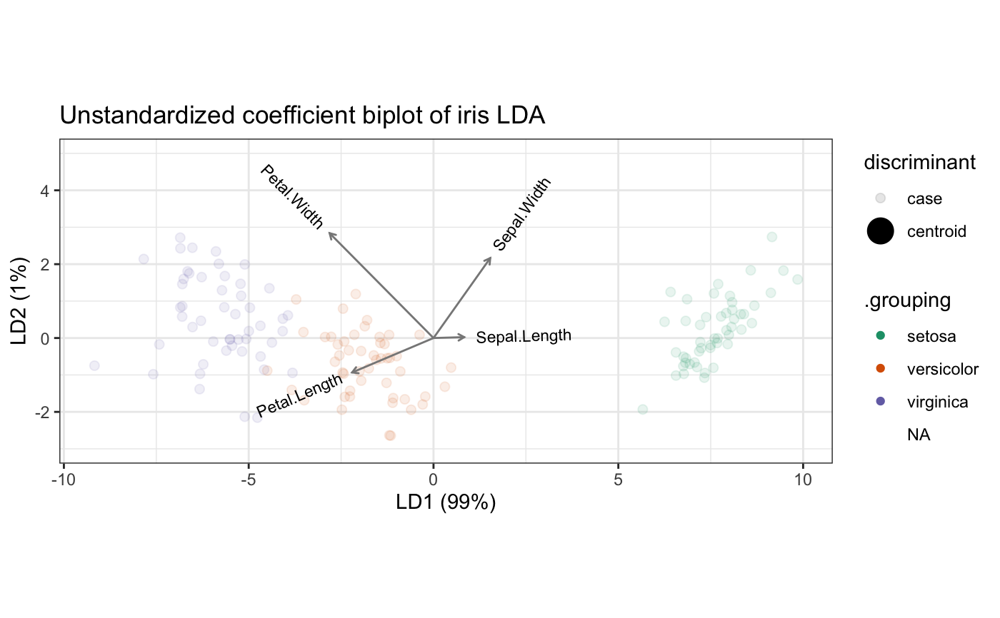
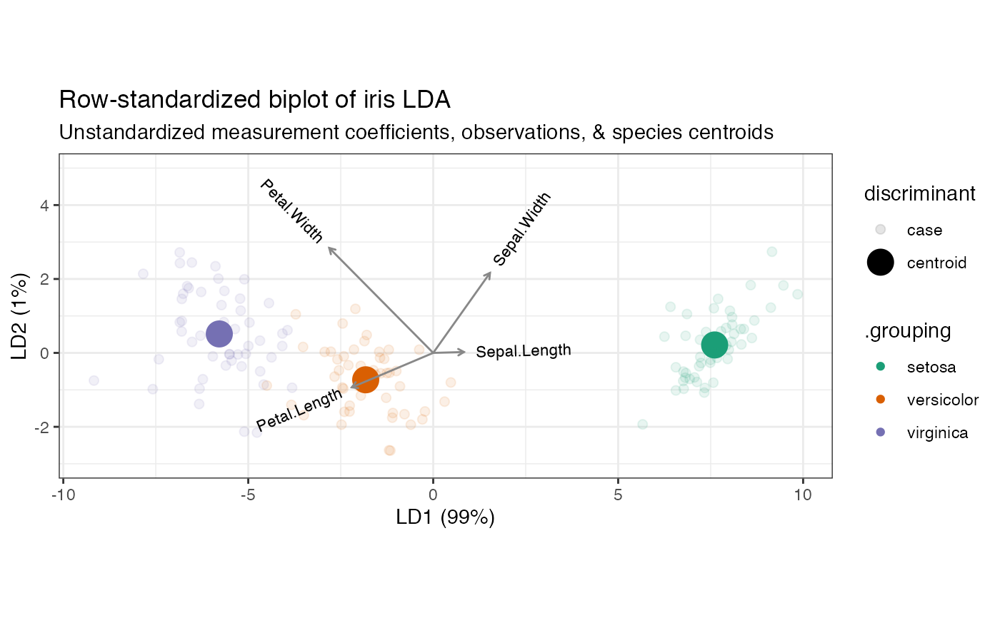
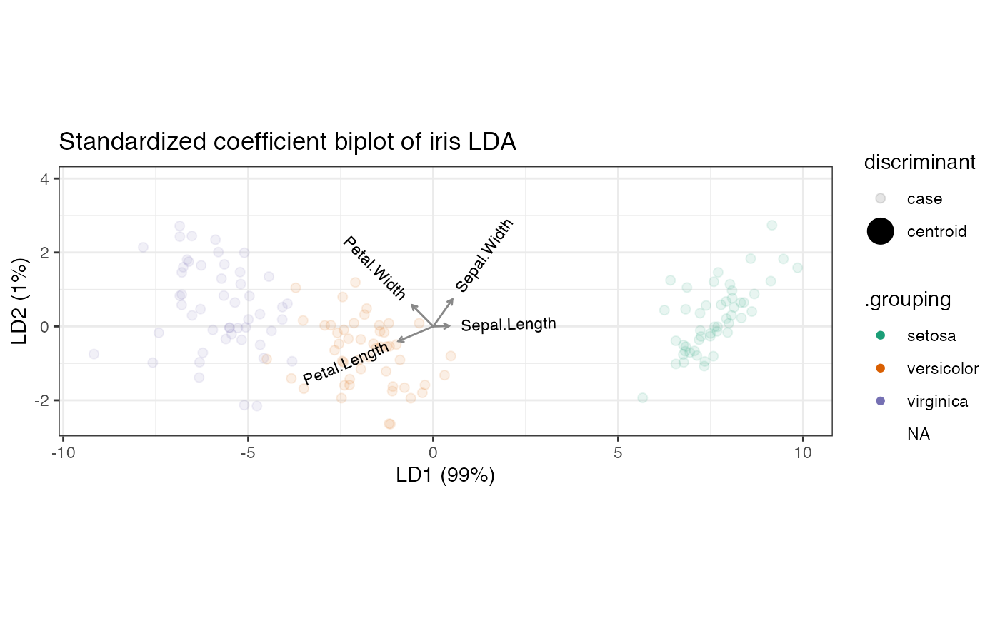
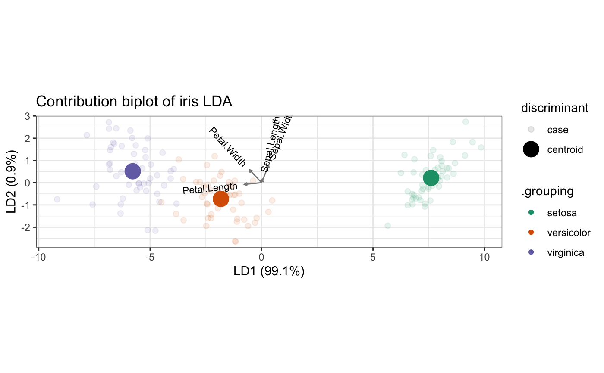

methods-lda.RdThese methods extract data from, and attribute new data to,
objects of class "lda" and "lda_ord" as returned by MASS::lda() and
lda_ord().
# S3 method for lda as_tbl_ord(x) # S3 method for lda_ord as_tbl_ord(x) # S3 method for lda recover_u(x) # S3 method for lda_ord recover_u(x) # S3 method for lda recover_v(x) # S3 method for lda_ord recover_v(x) # S3 method for lda recover_inertia(x) # S3 method for lda_ord recover_inertia(x) # S3 method for lda recover_coord(x) # S3 method for lda_ord recover_coord(x) # S3 method for lda recover_conference(x) # S3 method for lda_ord recover_conference(x) # S3 method for lda augmentation_u(x) # S3 method for lda_ord augmentation_u(x) # S3 method for lda augmentation_v(x) # S3 method for lda_ord augmentation_v(x) # S3 method for lda augmentation_coord(x) # S3 method for lda_ord augmentation_coord(x) # S3 method for lda supplementation_u(x) # S3 method for lda_ord supplementation_u(x)
| x | An ordination object. |
|---|
See lda-ord for details.
#> relwt glufast glutest instest sspg group #> 1 0.81 80 356 124 55 Normal #> 2 0.95 97 289 117 76 Normal #> 3 0.94 105 319 143 105 Normal #> 4 1.04 90 356 199 108 Normal #> 5 1.00 90 323 240 143 Normal #> 6 0.76 86 381 157 165 Normal#> Call: #> lda(group ~ ., data = heplots::Diabetes) #> #> Prior probabilities of groups: #> Normal Chemical_Diabetic Overt_Diabetic #> 0.5241379 0.2482759 0.2275862 #> #> Group means: #> relwt glufast glutest instest sspg #> Normal 0.9372368 91.18421 349.9737 172.6447 114.0000 #> Chemical_Diabetic 1.0558333 99.30556 493.9444 288.0000 208.9722 #> Overt_Diabetic 0.9839394 217.66667 1043.7576 106.0000 318.8788 #> #> Coefficients of linear discriminants: #> LD1 LD2 #> relwt 1.3624356881 -3.784142444 #> glufast -0.0336487883 0.036633317 #> glutest 0.0125763942 -0.007092017 #> instest -0.0001022245 -0.006173424 #> sspg 0.0042431866 0.001134070 #> #> Proportion of trace: #> LD1 LD2 #> 0.8812 0.1188as_tbl_ord(diabetes_lda) %>% augment() %>% mutate_u(discriminant = ifelse(! .supplement, "centroid", "case")) %>% print() -> diabetes_lda#> # A tbl_ord of class 'lda': (148 x 2) x (5 x 2)' #> # 2 coordinates: LD1 and LD2 #> # #> # U: [ 148 x 2 | 6 ] #> LD1 LD2 | .name .prior .counts .supplement #> | <chr> <dbl> <int> <lgl> #> 1 -1.75 0.400 | 1 Norm… 0.524 76 FALSE #> 2 0.340 -1.38 | 2 Chem… 0.248 36 FALSE #> 3 3.66 0.580 | 3 Over… 0.228 33 FALSE #> 4 -1.72 0.663 | 4 1 NA NA TRUE #> 5 -2.85 1.30 | 5 2 NA NA TRUE #> # … with 143 more rows, and 2 more #> # U: [ 148 x 2 | 6 ]# variables: .grouping <fct>, #> LD1 LD2 | # discriminant <chr> #> # #> # V: [ 5 x 2 | 1 ] #> LD1 LD2 | .name #> | <chr> #> 1 1.36 -3.78 | 1 relwt #> 2 -0.0336 0.0366 | 2 glufast #> 3 0.0126 -0.00709 | 3 glutest #> 4 -0.000102 -0.00617 | 4 instest #> 5 0.00424 0.00113 | 5 sspgggbiplot(diabetes_lda) + theme_bw() + geom_u_point(aes(shape = .grouping, size = discriminant), alpha = .5) + geom_v_axis(color = "#888888") + ggtitle("Column-standardized LDA biplot of Reaven & Miller diabetes data")#> Warning: Using size for a discrete variable is not advised.#> Warning: Removed 3 rows containing missing values (geom_point).# Unstandardized, standardized, and de-sphered LDAs of Anderson Iris data # data centroid iris_centroid <- t(apply(iris[, 1:4], 2, mean)) # custom biplot lda_biplot <- function(lda) { lda %>% as_tbl_ord() %>% augment() %>% mutate_u( species = .grouping, discriminant = ifelse(! .supplement, "centroid", "case") ) %>% ggbiplot() + theme_bw() + geom_u_point(aes( color = .grouping, size = discriminant, alpha = discriminant )) + geom_v_vector(color = "#888888") + geom_v_text_radiate(aes(label = .name), size = 3) + scale_color_brewer(type = "qual", palette = 2) } # Unstandardized discriminant coefficients define the discriminant axes as # linear combinations of the centered variables iris_lda <- as_tbl_ord(lda_ord(iris[, 1:4], iris[, 5], axes.scale = "unstandardized")) # linear combinations of centered variables print(sweep(iris_lda$means, 2, iris_centroid, "-") %*% get_v(iris_lda))#> LD1 LD2 #> setosa 7.607600 0.2151330 #> versicolor -1.825049 -0.7278996 #> virginica -5.782550 0.5127666#> LD1 LD2 #> setosa 7.607600 0.2151330 #> versicolor -1.825049 -0.7278996 #> virginica -5.782550 0.5127666# unstandardized coefficient LDA biplot lda_biplot(iris_lda) + ggtitle("Unstandardized coefficient biplot of iris LDA")#> Warning: Using size for a discrete variable is not advised.#> Warning: Using alpha for a discrete variable is not advised.#> Warning: Removed 3 rows containing missing values (geom_point).# Standardized discriminant coefficients permit comparisons across the variables iris_lda <- as_tbl_ord(lda_ord(iris[, 1:4], iris[, 5], axes.scale = "standardized")) # standardized variable contributions to discriminant axes tidy(iris_lda, .matrix = "v") %>% dplyr::mutate(variable = .name) %>% tidyr::gather(discriminant, coefficient, LD1, LD2) %>% ggplot(aes(x = discriminant, y = coefficient, fill = variable)) + geom_bar(position = "dodge", stat = "identity") + labs(y = "Standardized coefficient", x = "Linear discriminant") + theme_bw() + coord_flip()# standardized coefficient LDA biplot lda_biplot(iris_lda) + ggtitle("Standardized coefficient biplot of iris LDA")#> Warning: Using size for a discrete variable is not advised.#> Warning: Using alpha for a discrete variable is not advised.#> Warning: Removed 3 rows containing missing values (geom_point).# Variable contributions (de-sphered discriminant coefficients) recover the # inner product relationship with the centered class centroids iris_lda <- as_tbl_ord(lda_ord(iris[, 1:4], iris[, 5], axes.scale = "contribution")) # symmetric square root of within-class covariance C_W_eig <- eigen(cov(iris[, 1:4] - iris_lda$means[iris[, 5], ])) C_W_sqrtinv <- C_W_eig$vectors %*% diag(1/sqrt(C_W_eig$values)) %*% t(C_W_eig$vectors) # product of matrix factors (scores and loadings) print(get_u(iris_lda, .supplement = FALSE) %*% t(get_v(iris_lda)))#> [,1] [,2] [,3] [,4] #> setosa 0.3061785 2.593874 -5.861269 -3.9959956 #> versicolor -0.1774657 -1.154286 1.457859 0.5653316 #> virginica -0.1287128 -1.439587 4.403411 3.4306640# "asymmetric" square roots of Mahalanobis distances between variables print(sweep(iris_lda$means, 2, iris_centroid, "-") %*% C_W_sqrtinv)#> [,1] [,2] [,3] [,4] #> setosa 0.3103442 2.629165 -5.941014 -4.0503629 #> versicolor -0.1798802 -1.169991 1.477693 0.5730232 #> virginica -0.1304640 -1.459174 4.463321 3.4773397# contribution LDA biplot lda_biplot(iris_lda) + ggtitle("Contribution biplot of iris LDA")#> Warning: Using size for a discrete variable is not advised.#> Warning: Using alpha for a discrete variable is not advised.#> Warning: Removed 3 rows containing missing values (geom_point).